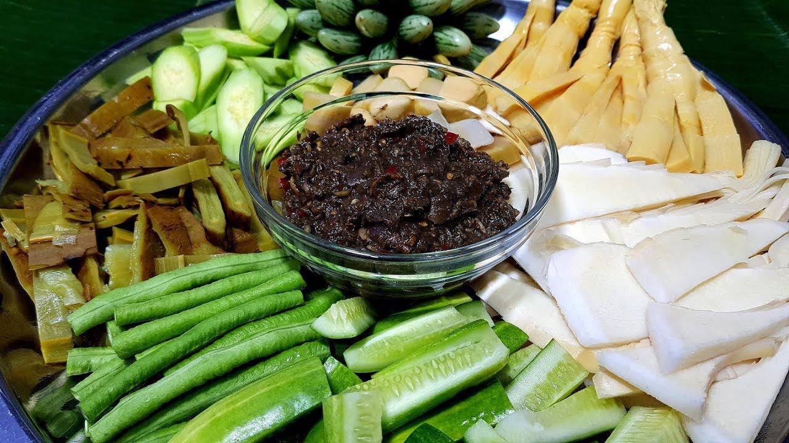
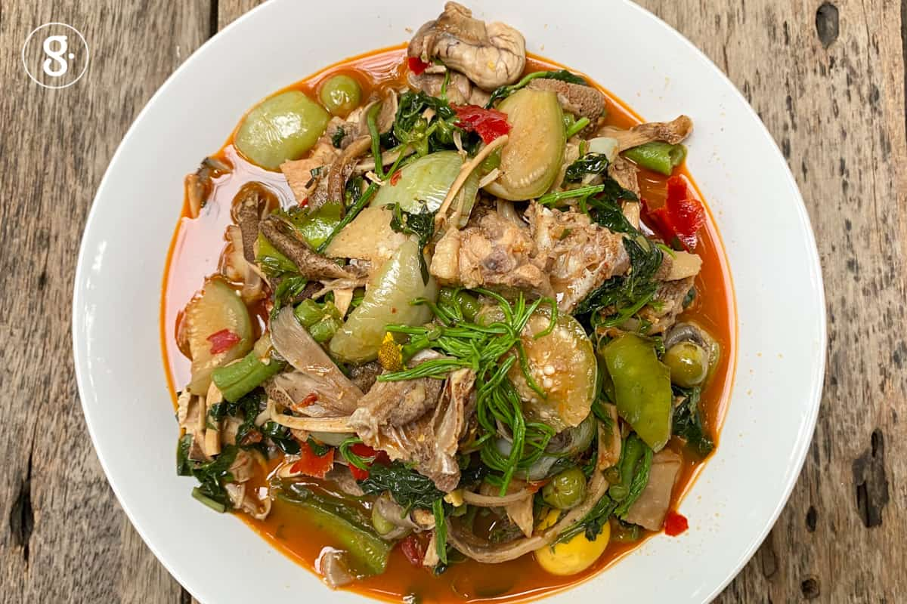

อาหาร

ข้าวพันผัก เป็นอาหารที่สืบเนื่องมาจากข้าวแคบแล้วนำมาประยุกต์ให้เกิดสารอาหารเพิ่มขึ้นด้วยการนำผักชนิดต่างๆมาใส่ลงบนแป้งที่อยู่บนปากหม้อ แล้วทำให้สุกก็สามารถรับประทานกับน้ำจิ้มได้เลย โดยไม่ต้องรอให้แห้งเหมือนกับข้าวแคบ สาเหตุที่ชื่อว่า ข้าวพันผัก เพราะว่าแป้งที่ห่อผักทำมาจากข้าว ดังนั้นจึงเรียกว่า ข้าวพันผัก นั่นเอง
'ข้าวพันผัก'เป็นอาหารยอดฮิตของคนเมืองลับแล สังเกตได้จากริมถนนหรือในหมู่บ้านของเมืองลับแลต่างก็จะมีเพิงขายข้าวพันผักโดยทั่วไป สำหรับหน้าตาของข้าวพันผักนั้นคล้ายๆข้าวเกรียบปากหม้อของคนภาคกลาง แต่เป็นข้าวเกรียบปากหม้อที่มีไส้เป็นผักกาดขาว ผักคะน้า ผักบุ้ง ผักกวางตุ้ง ถั่วงอกและกะหล่ำปลีซอย
วิธีการทำข้าวพันผัก คือ นำแป้ง(ชนิดเดียวกับที่ทำข้าวแคบ)นำมาละเลงบนผ้าขาวบางที่วางบนปากหม้อที่มีน้ำเดือด ประมาณเวลาว่าแป้งสุก ก็นำผักชนิดต่างๆ(เช่น ผักกาดขาว หั่นเป็นชิ้นเล็ก)ใส่ลงไปบนแผ่นแป้ง ซึ่งผักเหล่านั้นจะต้องนำมานึ่งให้สุกก่อน โดยนำผักใส่ลงในหม้อที่ใช้ละเลงแป้ง ปิดฝาไว้สักครู่ผักก็จะสุก รับประทานกับซอสปรุงรสตามใจชอบ

หมี่พัน คนลับแลสมัยก่อนชอบกินหมี่ขาวลวกธรรมดา ต่อมามีการนำเอาข้าวแคบที่ทำมากันเนิ่นนานนั้นนำมาประยุกต์กันโดยใช้หมี่ขาวลวกปรุงรสด้วยพริก น้ำตาล น้ำปลา ให้เรียบร้อยแล้วนำมาพันกับข้าวแคบที่มีอยู่ ต่อมามีชาวบ้านนิยมกินกันมากยิ่งขึ้น ทำให้นำมาเป็นอาชีพเสริมได้อีกอาชีพหนึ่ง ปัจจุบันทำให้มีผู้คนชอบหมี่พันจำนวนมาก เพราะรสชาติที่อร่อยสามารถรับประทานเป็นอาหารว่างได้อย่างดีอีกด้วย
หมี่พัน คือ การนำเอาแผ่นข้าวแคบมาม้วนห่อเส้นหมี่ที่ลวกและปรุงรสด้วยน้ำมันกระเทียมเจียว หอม น้ำปลา น้ำมะนาว พริกป่นและซอสมะเขือเทศ พันเป็นแท่งยาว หากไม่นำข้าวแคบมาห่อก็จะเรียกว่า"หมี่คลุก"สำหรับเส้นที่นิยมนำมาทำหมี่คลุกนั้น ใช้ได้ทุกเส้นตามแต่ลูกค้าสั่ง ไม้ว่าจะเป็นเส้นหมี่ขาว เส้นเล็ก เส้นใหญ่หรือบะหมี่ แต่ที่นิยมมากที่สุดคือ หมี่ขาว

น้ำพริกน้ำปู น้ำปูจะทำในหน้าฝน ชาวบ้านจะเก็บปูที่อยู่ตามคันนานำมาตำโดยมีส่วนผสมใบตะไคร้ ใบฝรั่ง ตำให้ละเอียดเพื่อดับกลิ่นคาวพอเสร็จแล้วนำมาหมักทิ้งไว้ 1 คืน นำมาเคี่ยวจนเป็นสีดำ เสร็จแล้วนำมาเก็บไว้กินตลอดปี ที่เหลือก็นำมาขาย นิยมนำมาตำเป็นน้ำพริกเรียกว่า น้ำพริกน้ำปู เครื่องเคียงทานกับหน่อไม้ ผักสด ผักลวกต่างๆ

แกงแค เป็นแกงที่ประกอบด้วยผักหลายชนิดและมีเนื้อสัตว์เป็นส่วนผสมด้วยหนึ่งอย่าง เรียกชื่อแกงแคตามชนิดของเนื้อสัตว์ที่นำมาเป็นส่วนผสมนั้น เช่น แกงแคหมู แกงแคไก่ แกงแคกบ แกงแคปลา ผักที่ใช้เป็นส่วนผสมหลักส่วนใหญ่ประกอบด้วย ผักตำลึง ผักชะอม ผักชีฝรั่ง มะเขือพวง เห็ดลมอ่อน และดอกแค ดอกงิ้ว ผักคราด ดอกข่า ถั่วฝักยาว มะเขือ บวบ